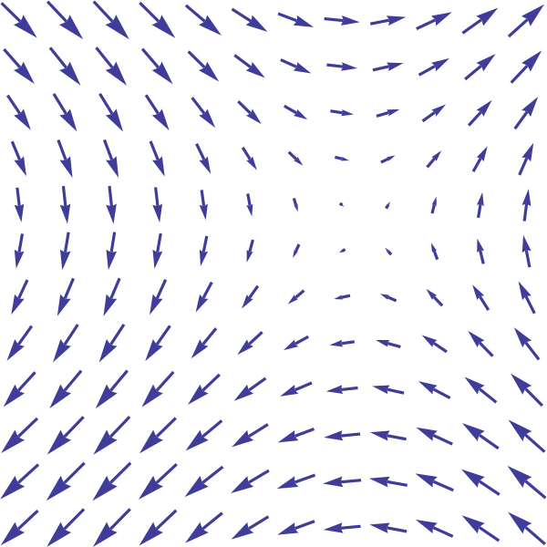
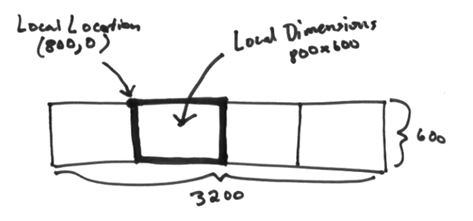
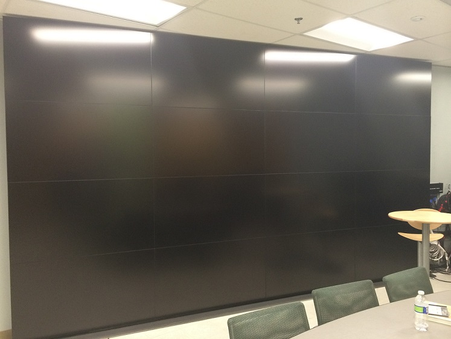

Visualization
Makes Data Alive
Chenwei Xie --ZheJiang University
3.1415926....

Author: Jesus Diaz
Warm Up
...Have you ever wannna see the Vector Field...
What is Vector Field?
Basicly
Naturally
Visualization0--Vector Field
Aim = Wind + Hawaii
DataSet
Data = WindSpeed + WindDirection
Method


Intermediate Result

Final Result
Application
- Weather Forecast
- Research on Wind
Visualization1--Population Flow
Aim = People + Movement + WashingtonDC + Disease
Dataset


Data = 500K + Schedules + Events
Final Result
Application
- Population Movement
- Disease Flow
Visualization2--Disease Network
Aim = Network + 500K + People
Dataset
Dataset = Schedules + Events
1K People
How about 500K People ???
Method
Most-Pixel-Ever
Intermediate Result
Doing now
Application
- Visualize Large graph with Large data
THE END && ACKNOWLEDGEMENT
- VIDI Laboratory
- Professor Kwan-Liu Ma
- Christopher Bryan(PhD.)
- Providers of Papers, Libraries, Algorithms